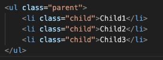
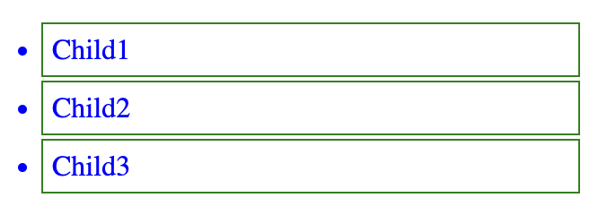
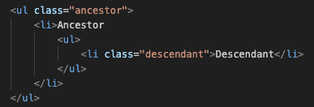
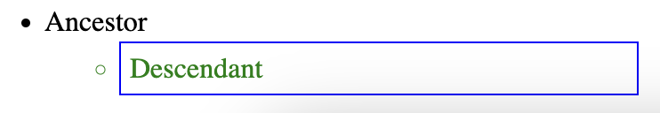
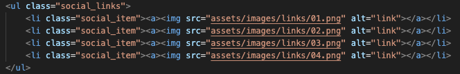

Селектори сусідніх елементів використовуються для вибору елементів, які знаходяться поруч з певним елементом. Вони дозволяють стилізувати елементи, розташовані на тому ж рівні в DOM-дереві.
.category {
img {
width: 30px;
margin-right: 10px;
}
img + span {
font-weight: 600;
}
}
div ~ .post_card {
margin-right: 15px;
}
Селектори дочірніх елементів використовуються для вибору елементів, які є безпосередніми дочірніми елементами певного елемента. Вони дозволяють стилізувати елементи, які знаходяться на один рівень нижче в DOM-дереві.
.parent > .child {
color: blue;
border: 1px solid green;
width: 20%;
padding: 5px;
margin: 2px;
}


.ancestor .descendant {
color: green;
border: 1px solid blue;
width: 20%;
padding: 5px;
margin: 2px;
}


Селектори атрибутів дозволяють вибирати HTML-елементи за наявністю або значенням певного атрибута. Це корисно для більш точного налаштування стилів.
[input="text"] {
background-color: lightgray;
}
[href^="https"] {
color: green;
}
[src$=".jpg"] {
border: 2px solid red;
}
[class*="btn"] {
padding: 10px;
}
[class~="highlight"] {
background-color: yellow;
}
[lang|="en"] {
font-style: italic;
}
.social_item {
[src$=".png"] {
width: 40px;
cursor: pointer;
}
[src$=".png"]:hover {
transform: scale(1.1);
}
}

Універсальний селектор (*) в CSS вибирає всі елементи на сторінці, включно з вкладеними.